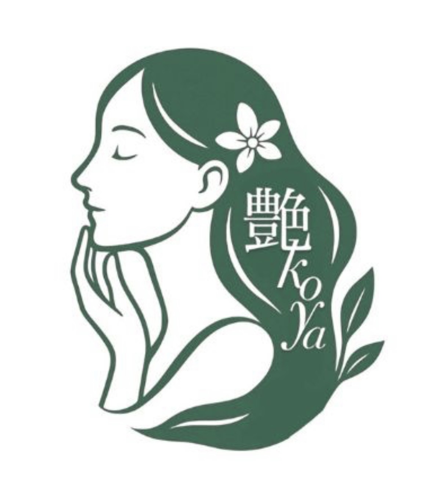
艶koyaTSUYAKOYA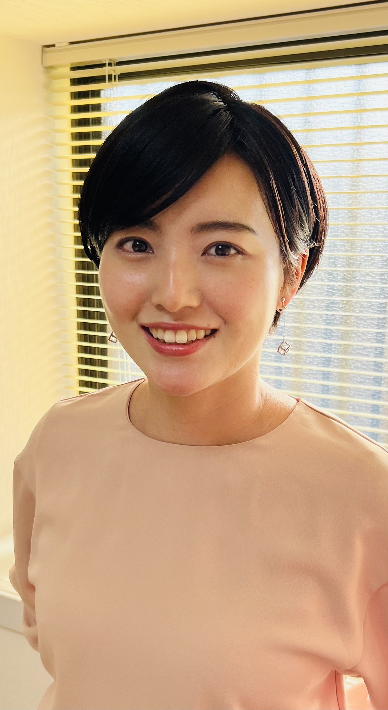
Our Concept
誰もが老ける人生ではなく、
きれいに年齢を重ねる人生を
選ぶことができる。
「艶koya」は、顔トレと姿勢改善を組み合わせた独自のアプローチで、あなたの内側にある美しさを引き出すセルフケアの場所です。
年齢を重ねてもなお輝き続けること、そして迷いながら疲れた人の「駆け込み寺」となること。その想いから、この名が生まれました。
Why Tsuyakoya
01Feature
顔だけ、身体だけではなく、全身を一つのつながりとして捉えます。姿勢が整うことでフェイスラインが変わり、顔トレが全身のバランスを整える。そのシナジーを最大化します。
02Feature
お一人おひとりのお悩みに合わせてレッスンメニューを組み立てます。無駄なセルフケアを学ぶ必要がなく、最短でお顔と身体が整います。
03Feature
自宅にいながら、全国各地からご受講いただけます。初心者の方でも安心して参加できるよう、丁寧なサポートをご用意しています。
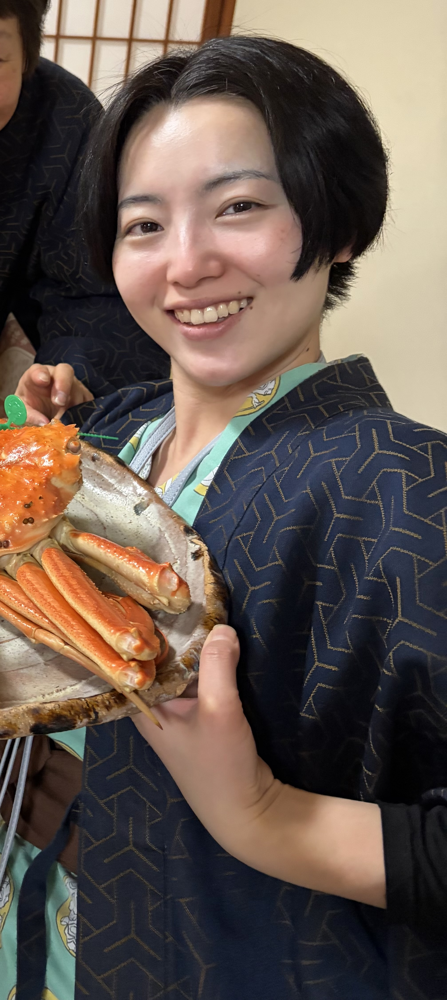
Profile
Kashiwanana · Instructor
「老けない」のではなく、「美しく老いる」。
その信念を胸に、顔トレと姿勢改善を組み合わせたセルフケアを届けています。
自身も長年の姿勢の悩みと向き合う中で、身体と顔のつながりに気づき、独自のメソッドを確立。全国各地の受講者さまとともに、内側から輝く美しさを育てています。
My Transformation
自身も変化を体験。そのメソッドをあなたへ。
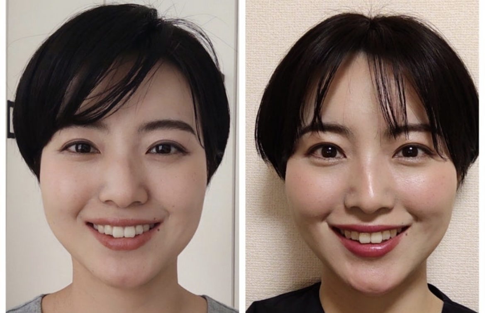
Before & After
顔トレ×姿勢改善で、内側から美しく。
受講者さまの実際の変化をご覧ください。
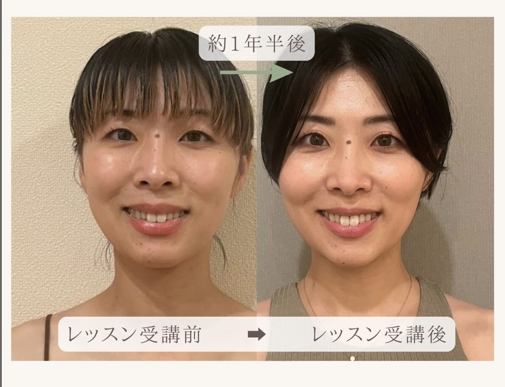
約1年半後・フェイスラインの変化
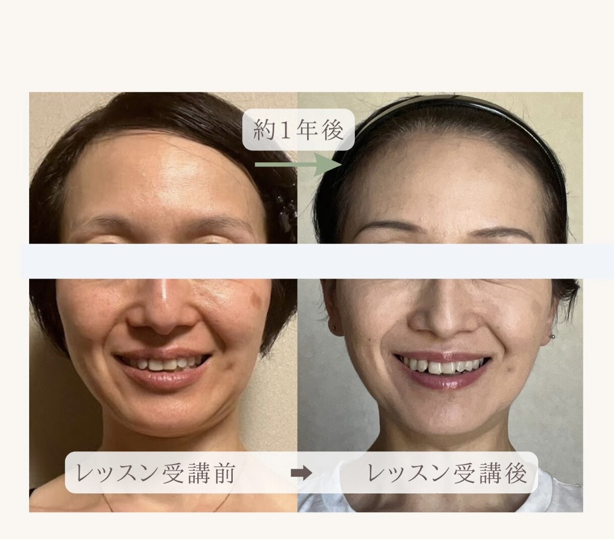
約1年後・目元と口元の変化
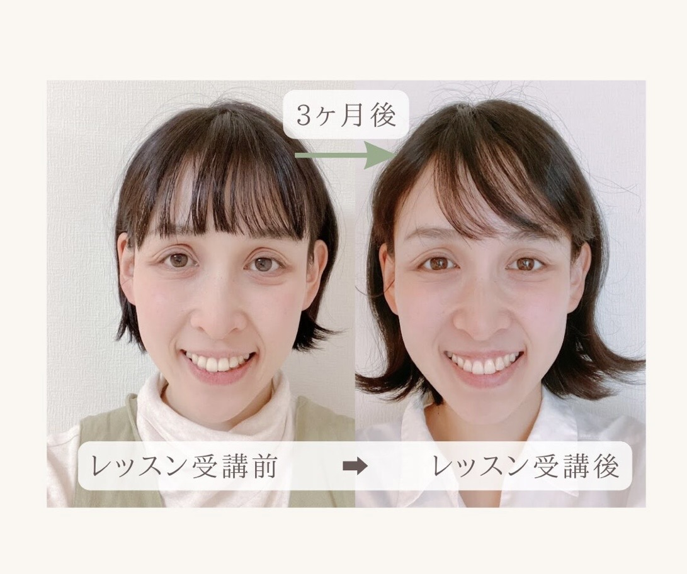
3ヶ月後・輪郭がすっきり
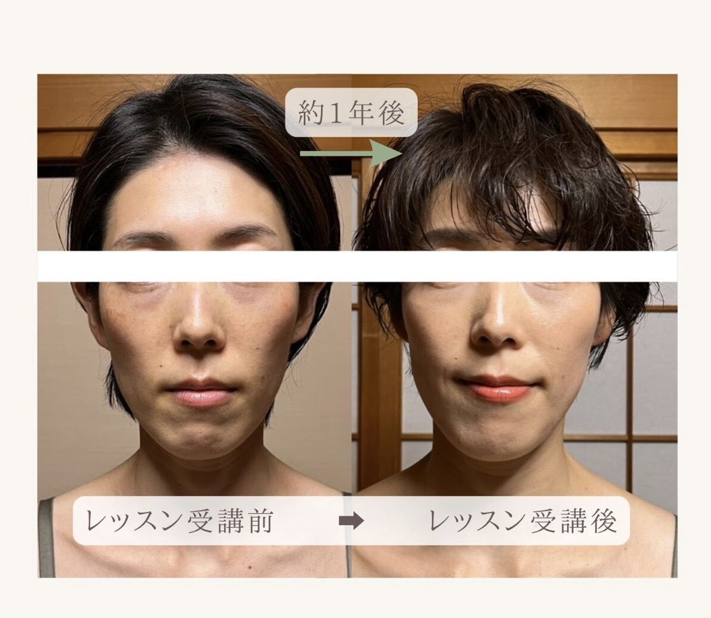
約1年後・全体の印象が若々しく
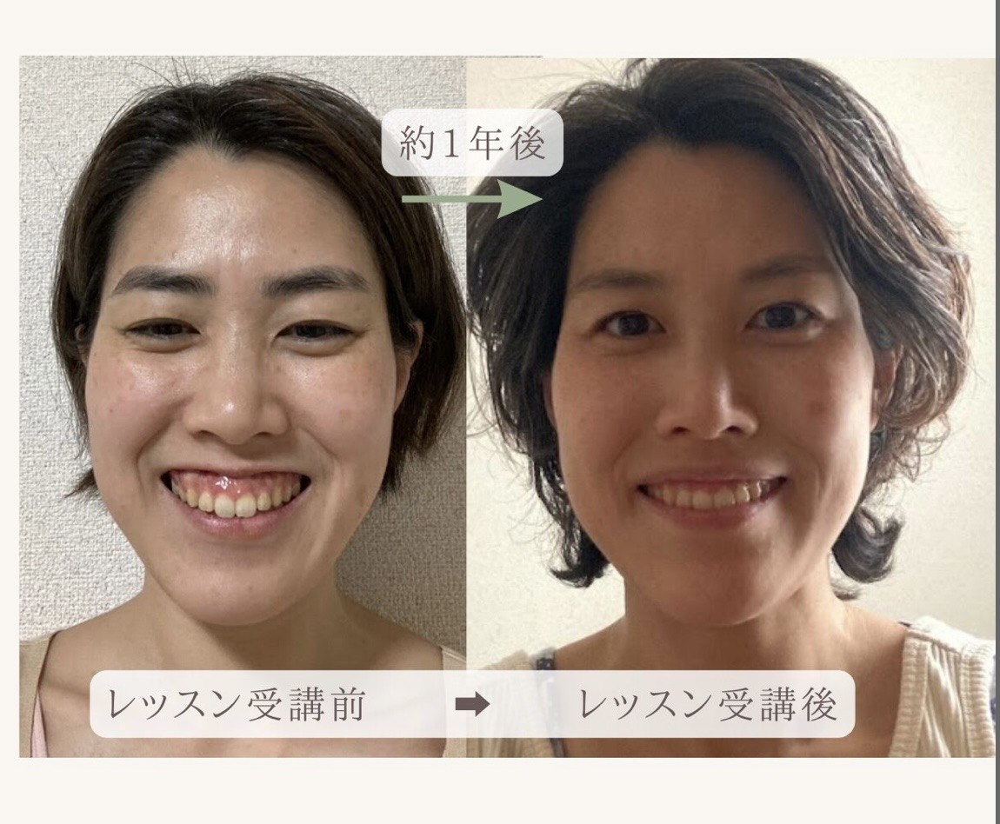
約1年後・笑顔が明るく
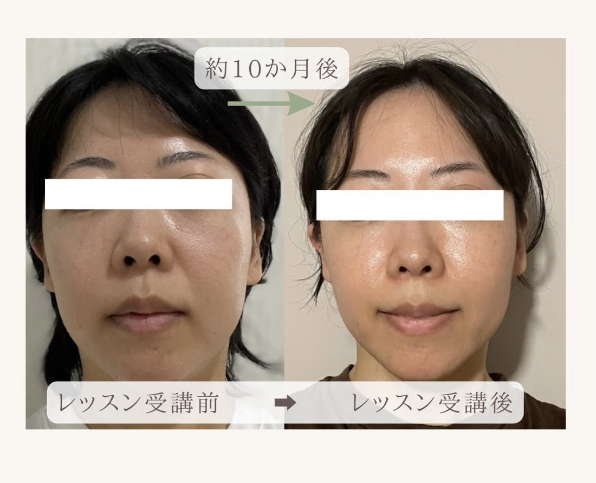
約10ヶ月後・肌質と輪郭
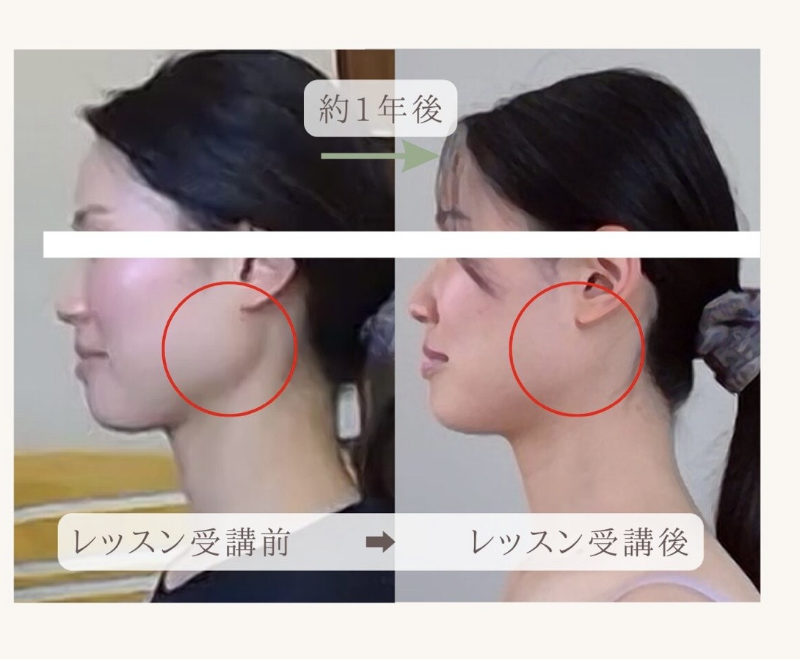
約1年後・首と顎のライン
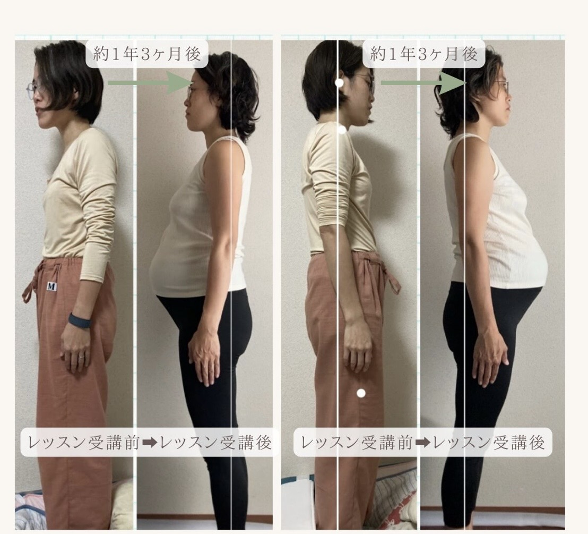
約1年3ヶ月後・姿勢の変化
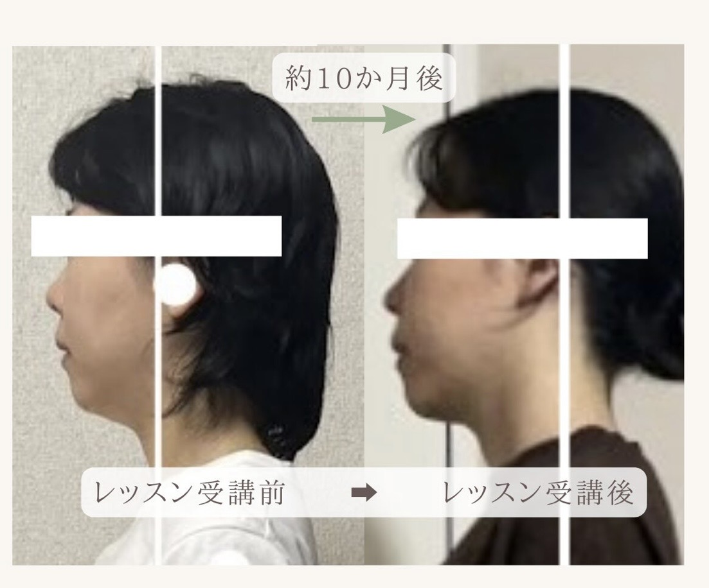
約10ヶ月後・横顔のフェイスライン
Voice
「変われた」という喜びの声が届いています。
40代女性
会社員・大阪在住
「顔だけじゃなく姿勢まで整うなんて思っていませんでした。毎朝鏡を見るのが楽しみになりました。」
50代女性
主婦・東京在住
「別人みたいと言われるようになりました。オンラインで自宅から受けられるのが続けられた理由です。」
30代女性
フリーランス・北海道在住
「何をすればいいかわからなかった私に、必要なことだけを丁寧に教えてくれました。最短で変われた気がします。」
Services
お一人おひとりのお悩みに合わせて、最適なプランをご提案します。
Trial · 体験
初めての方はまずこちらから。あなたのお悩みをお聞きし、顔トレ×姿勢改善の体験をしていただけます。オンラインで全国対応。
Personal · 個別
完全個別対応。あなただけのカリキュラムで、最短で結果を出します。継続サポート付きで、日常に取り入れやすいセルフケアを習得。
FAQ
Blog
顔トレ・姿勢・セルフケアについての知識を、毎月25日に更新しています。
2025年12月25日
顔トレ朝起きてすぐに取り入れられる顔トレをご紹介。継続することで表情筋が整い、一日中若々しい印象をキープできます。
2025年11月25日
姿勢改善「顔だけ」を鍛えても限界がある理由と、姿勢改善が顔の印象に与える驚きの効果を解説します。
毎月25日に新しい記事を公開しています。次の更新もお楽しみに。
Start Your Journey
無料体験レッスンで、あなたの変化をはじめましょう。
全国どこからでもオンラインで参加できます。